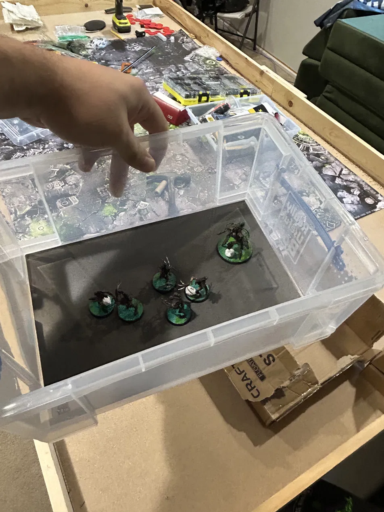
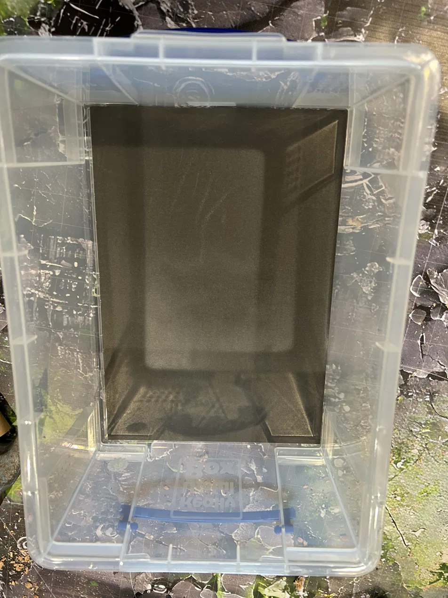
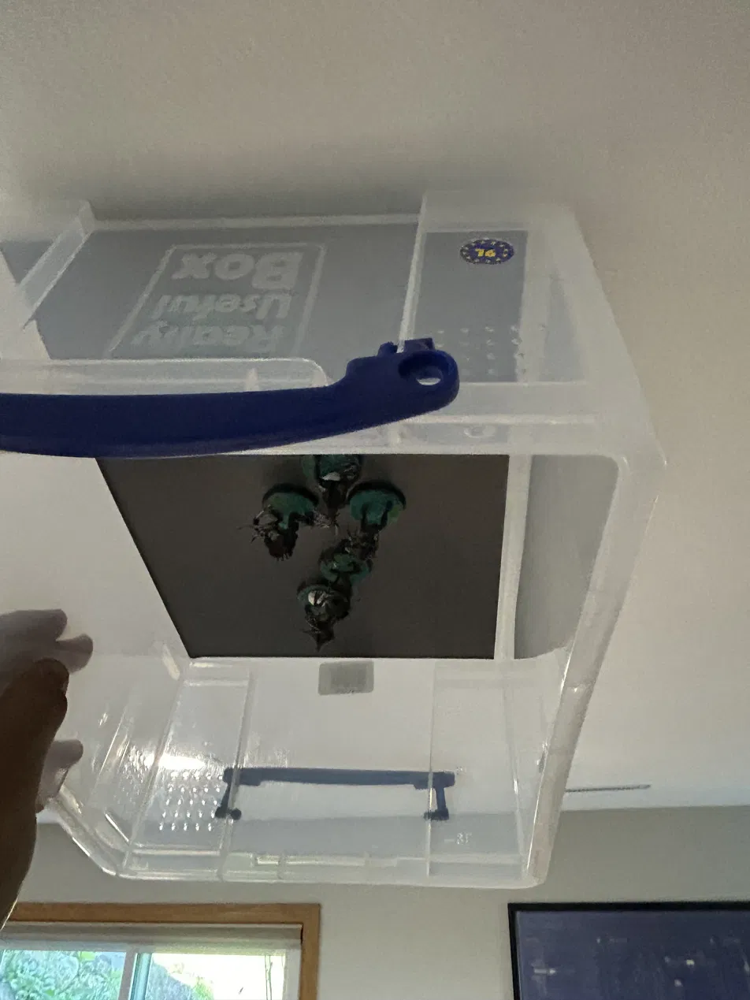

Budget 40k Army Transport: A Tub, a Sheet, and Some Magnets
If you've priced out official miniature cases, you know the pain: purpose-built foam transport bags run $80–$200+, the foam trays shred paint off anything with a spike on it (so, every Ork model ever made), and you're forever re-cutting foam every time your list changes.
Here's what I use instead: a clear plastic tub from Walmart, a peel-and-stick magnetic sheet, and a bag of tiny neodymium magnets. Total cost is around $25 for a box that hauls a serious chunk of my Ork army — and the hold is strong enough that I can flip the whole tub upside down and nothing moves. Proof below.

The parts list
- Really Useful Box, 9 liter (Walmart) — the star of the show. More on why this exact size below.
- 8" × 10" adhesive magnetic sheets (Amazon) — flexible magnetic sheet with peel-and-stick backing. One sheet per tub.
- N52 neodymium disc magnets (Amazon) — small rare-earth discs, about 2 mm thick. A 100-pack does a lot of boyz.
- Super glue — whatever you already glue your minis with.
Why the 9-liter box is the one to get
Really Useful Boxes come in a pile of sizes, and I've tried a few — get the 9 liter. It's the sweet spot for three reasons:
- The magnetic sheet matches it perfectly. An 8 × 10 sheet drops onto the floor of the 9L box like they were designed for each other — no trimming, no bare spots where a model can slide.
- The height is right. Tall enough for infantry, Nobz, and most medium-sized models standing up; shallow enough that things can't tip far even if a model somehow breaks free.
- It's built to carry. The lid snaps down with clip-lock handles that double as a carry grip, the boxes stack cleanly for bigger armies, and the clear plastic means you can see exactly which units are in which tub without opening anything.
The build (10 minutes, tops)
- Peel the backing off the magnetic sheet and stick it to the inside floor of the tub. Press it down firmly, working from the center out.
- Super-glue a neodymium disc to the underside of each base. One disc handles a standard 32 mm base; give bigger or top-heavy models two or three, spaced out toward the rim.
- Let the glue cure, then just… put your models in the tub. That's it. That's the whole system.

The upside-down test
This is the part nobody believes until they see it: with the discs on the bases and the sheet in the tub, the hold is strong enough to turn the entire box upside down and the models just hang there. No sliding, no dogpile of boyz in the corner, no touch-up painting session after every game night.

In practice that means the tub can ride in a car seat, get carried sideways under an arm, or get stacked under two more tubs, and everything arrives exactly where you put it. The magnets are strong enough to hold, but a gentle twist lifts any model right off.
Tips from the road
- Scrape or sand the base bottom before gluing the disc — glue holds much better on bare plastic than on primer or texture paint overspray.
- Top-heavy models get extra magnets. A disc near the rim on each side beats one in the center for anything with a high center of gravity.
- Magnetize the lid too. Stick a second sheet to the inside of the cover and you've got a whole extra deck for infantry. They ride upside down once the box is closed — and as the test above proves, the magnets couldn't care less.
- Label the tubs. Painter's tape on the end + a sharpie. Future you, digging for one specific unit five minutes before a game, will be grateful.
- Buy more sheets than you need. Once you have one tub working, you will absolutely make more. The magnet packs are big enough to cover the next tub or two anyway.
Somewhere around $25 per tub versus $100+ for a foam case — and the orky way is better and cheaper. Proper kunnin'.
Comments
Sign in with GitHub to join the discussion.